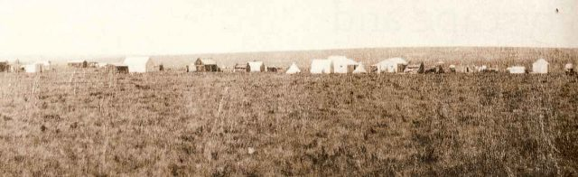
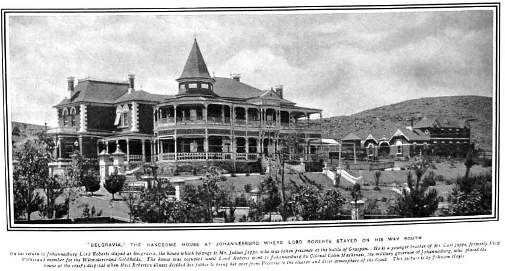
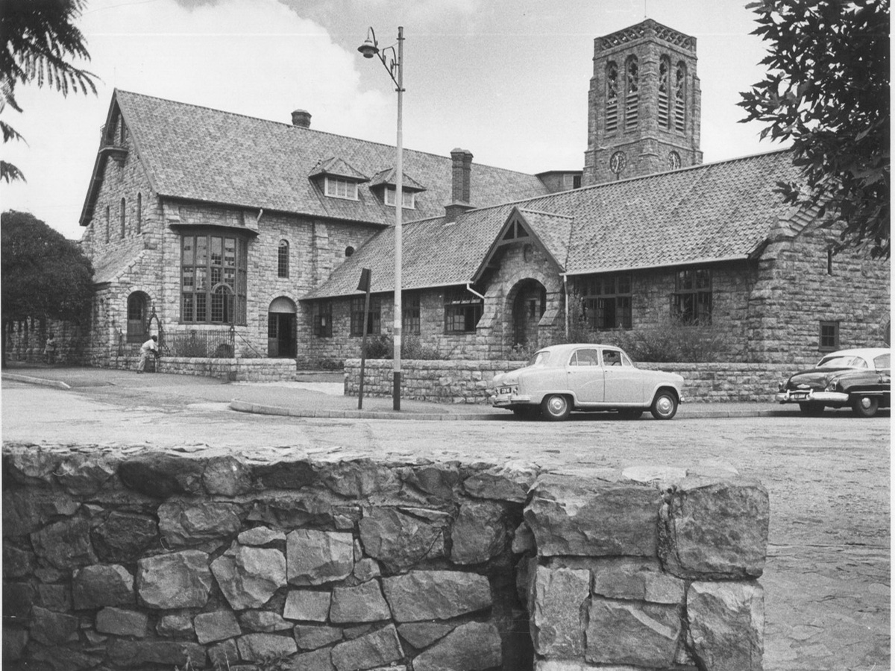
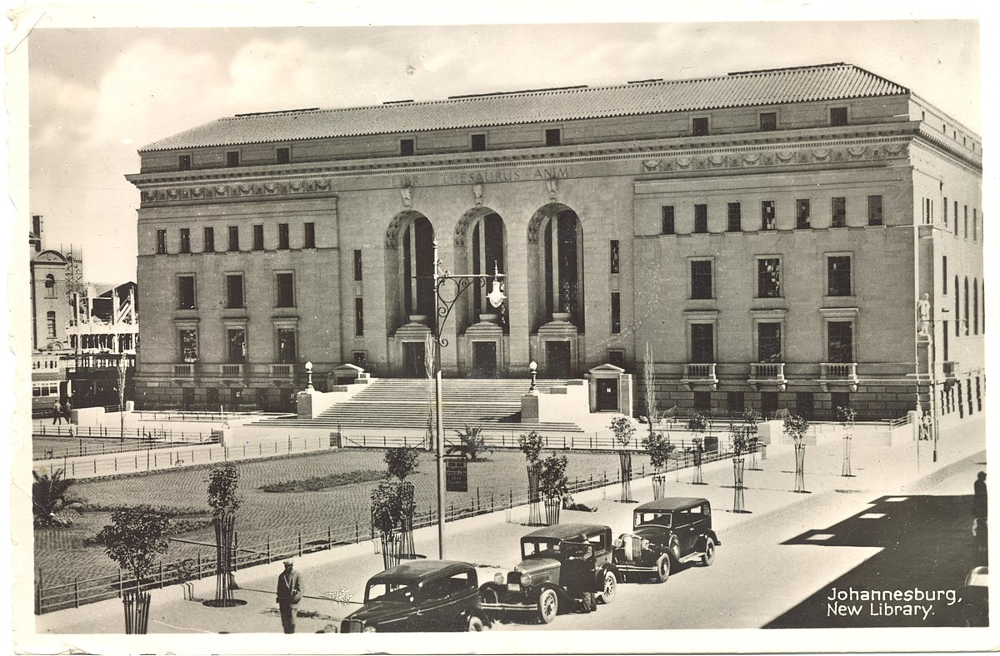
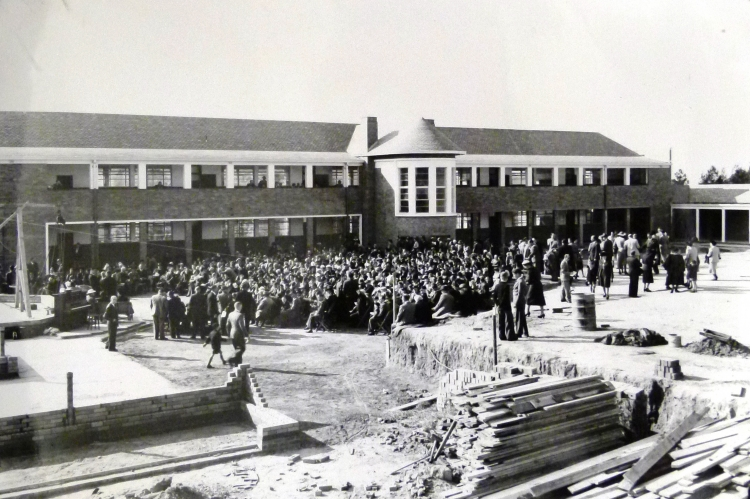

Timeline of Johannesburg
- 1886 - Johannesburg established after gold found in vicinity.

Ferreira’s Camp 1886 - 1887 - St. Mary's Church built.
- 1887 - Johannesburg Stock Exchange(JSE) founded.
- 1888 - JSE opens for business.
- 1890 - Jeppe High School for Boys was founded.

Jeppe High School for Boys - 1891 - Prison was built.
- 1895 - Railway operational.
- 1896 - Uprising against Boer government.
- 1896 - Braamfontein explosion.
- 1897 - Park Station opens.
- 1898 - St. John's College founded.

St. John's College - 1900 - Town captured by the British during Second Boer War.
- 1904 - Joburg Zoo established.
- 1906 - Trams converted to electric power.
- 1921 - Parktown Boys' High School was founded.
- 1922 - University of the Witwatersrand was incorporated.

University of the Witwatersrand - 1928 - Johannesburg gains city status.
- 1931 - Airport opens in Germiston.
- 1935 - Opening of Johannesburg City Library.

Johannesburg City Library - 1950 - Springbok Radio broadcasts begin.
- 1952 - Jan Smuts Airport established in Kempton Park.
- 1953 - St Stithians College was founded.

Opening Ceremony of St Stithians College - 1960 (21 March) - Sharpeville Massacre.
WARNING! THE LINKS BELOW MAY CONTAIN IMAGES THAT ARE NOT FOR SENSITIVE VIEWERS!sahistory.org
blackpast.org
humanrights.org - 1960 - Planetarium opens.
- 1964 - Johannesburg Botanical Gardens was established.
- 1969 - Hyde Park Corner (shopping centre) opens for business.
- 1973 - Carlton Centre, Sandton City Shopping Centre, and Marble Tower built.